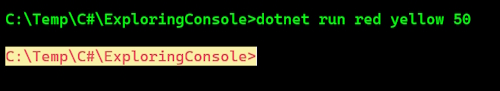

System is a namespace, which is like an address for a type.
System.Console.WriteLine tells the compiler to look for a method named WriteLine in a type named Console in a namespace named System. To simplify our code, the Console Application project template for every version of .NET before 6.0 added a statement at the top of the code file to tell the compiler to always look in the System namespace for types that haven't been prefixed with their namespace, as shown in the following code:
using System; // import the System namespace
We call this importing the namespace. The effect of importing a namespace is that all available types in that namespace will be available to your program without needing to enter the namespace prefix and will be seen in IntelliSense while you write code.
Traditionally, every .cs file that needs to import namespaces would have to start with using statements to import those namespaces. Namespaces like System and System.Linq are needed in almost all .cs files, so the first few lines of every .cs file often had at least a few using statements, as shown in the following code:
using System;
using System.Linq;
using System.Collections.Generic;
C# 10 introduces some new features that simplify importing namespaces.
First, the global using statement means you only need to import a namespace in one .cs file and it will be available throughout all .cs files. You could put global using statements in the Program.cs file but I recommend creating a separate file for those statements named something like GlobalUsings.cs or GlobalNamespaces.cs, as shown in the following code:
global using System;
global using System.Linq;
global using System.Collections.Generic;
Create a new Solution in Visual Studio. For example, HelloCS.
Go to the obj\Debug\net6.0 folder, and open the file named HelloCS.GlobalUsings.g.cs.
The following file is automatically generated for you.
// <autogenerated />
global using global::System;
global using global::System.Collections.Generic;
global using global::System.IO;
global using global::System.Linq;
global using global::System.Net.Http;
global using global::System.Threading;
global using global::System.Threading.Tasks;
You can add or remove global using statements by modifying the Solution's .csproj file.
<Project Sdk="Microsoft.NET.Sdk">
<PropertyGroup>
<OutputType>Exe</OutputType>
<TargetFramework>net7.0</TargetFramework>
<ImplicitUsings>enable</ImplicitUsings>
<Nullable>enable</Nullable>
</PropertyGroup>
<ItemGroup>
<Using Remove="System.Threading" />
<Using Include="System.Numerics" />
</ItemGroup>
</Project>
By adding an ItemGroup section in our project we can modify the global usings. Now when you open the GlobalUsings file it will look like this.
// <auto-generated/>
global using global::System;
global using global::System.Collections.Generic;
global using global::System.IO;
global using global::System.Linq;
global using global::System.Net.Http;
global using global::System.Numerics;
global using global::System.Threading.Tasks;
You can disable the implicitly imported namespaces feature for all SDKs by removing an entry in the project file, as shown in the following markup:
<ImplicitUsings>enable</ImplicitUsings>
In English, verbs are doing or action words, like run and jump. In C#, doing or action words are called methods. There are hundreds of thousands of methods available to C#.
In C#, methods such as WriteLine change how they are called or executed based on the specifics of the action. This is called overloading. Consider the following example:
// outputs the current line terminator string
// by default, this is a carriage-return and line feed
Console.WriteLine();
// outputs the greeting and the current line terminator string
Console.WriteLine("Hello Ahmed");
// outputs a formatted number and date and the current line terminator string
Console.WriteLine("Temperature on {0:D} is {1}°C.", DateTime.Today, 23.4);
A different analogy is that some words are spelled the same but have different meanings depending on the context.
In English, nouns are names that refer to things. For example, Fido is the name of a dog. The word "dog" tells us the type of thing that Fido is, and so in order for Fido to fetch a ball, we would use his name.
In C#, their equivalents are types, variables, fields, and properties. For example:
There are tens of thousands of types available to C#, though have you noticed how I didn't say, "There are tens of thousands of types in C#?" The difference is subtle but important.
The language of C# only has a few keywords for types, such as string and int, and strictly speaking, C# doesn't define any types. Keywords such as string that look like types are aliases, which represent types provided by the platform on which C# runs.
It's important to know that C# cannot exist alone; after all, it's a language that runs on variants of .NET. In theory, someone could write a compiler for C# that uses a different platform, with different underlying types. In practice, the platform for C# is .NET, which provides tens of thousands of types to C#, including System.Int32, which is the C# keyword alias int maps to, as well as many more complex types, such as System.Xml.Linq.XDocument.
It's worth taking note that the term type is often confused with class. Have you ever played the parlor game Twenty Questions, also known as Animal, Vegetable, or Mineral? In the game, everything can be categorized as an animal, vegetable, or mineral. In C#, every type can be categorized as a class, struct, enum, interface, or delegate. As examples, the C# keyword string is a class, but int is a struct. So, it is best to use the term type to refer to both.
We know that there are more than 100 keywords in C#, but how many types are there? Let's write some code to find out how many types (and their methods) are available to C# in our simple console application.
Add the following using statement to the top of the code.
using System.Reflection;
then.
static void Main(string[] args)
{
Assembly? assembly = Assembly.GetEntryAssembly();
if (assembly == null) return;
// loop through the assemblies that this app references
foreach (AssemblyName name in assembly.GetReferencedAssemblies())
{
// load the assembly so we can read its details
Assembly a = Assembly.Load(name);
// declare a variable to count the number of methods
int methodCount = 0;
// loop through all the types in the assembly
foreach (TypeInfo t in a.DefinedTypes)
{
// add up the counts of methods
methodCount += t.GetMethods().Count();
}
// output the count of types and their methods
Console.WriteLine("{0:N0} types with {1:N0} methods in {2} assembly.", arg0: a.DefinedTypes.Count(), arg1:methodCount, arg2: name.Name);
}
}
Results:
0 types with 0 methods in System.Runtime assembly.
108 types with 1,141 methods in System.Linq assembly.
46 types with 670 methods in System.Console assembly.
Note: Why does the System.Runtime assembly contain zero types? This assembly is special because it contains only type-forwarders rather than actual types. A type-forwarder represents a type that has been implemented outside of .NET or for some other advanced reason.
Add some other using statements into the Main() method.
System.Data.DataSet ds;
HttpClient client;
Now, run the program again and you will get the following results.
0 types with 0 methods in System.Runtime assembly.
400 types with 7,038 methods in System.Data.Common assembly.
426 types with 4,613 methods in System.Net.Http assembly.
108 types with 1,141 methods in System.Linq assembly.
46 types with 670 methods in System.Console assembly.
Now, you have a better sense of why learning C# is a challenge, because there are so many types and methods to learn. Methods are only one category of a member that a type can have, and you and other programmers are constantly defining new types and members!
All applications process data. Data comes in, data is processed, and then data goes out.
Data usually comes into our program from files, databases, or user input, and it can be put temporarily into variables that will be stored in the memory of the running program. When the program ends, the data in memory is lost. Data is usually output to files and databases, or to the screen or a printer. When using variables, you should think about, firstly, how much space the variable takes in the memory, and, secondly, how fast it can be processed.
We control this by picking an appropriate type. You can think of simple common types such as int and double as being different-sized storage boxes, where a smaller box would take less memory but may not be as fast at being processed; for example, adding 16-bit numbers might not be processed as fast as adding 64-bit numbers on a 64-bit operating system. Some of these boxes may be stacked close by, and some may be thrown into a big heap further away.
There are naming conventions for things, and it is good practice to follow them.
Camel case - cost, orderDetail, dateOfBirth - for Local variables, private fields
Title case aka Pascal case - String, Int32, Cost, DateOfBirth, Run - Types, non-private fields, and other members like methods.
Creating and using local variables.
// let the heightInMetres variable become equal to the value 1.88
double heightInMetres = 1.88;
Console.WriteLine($"The variable {nameof(heightInMetres)} has the value {heightInMetres}.");
The variable heightInMetres has the value 1.88.
When you assign to a variable, you often, but not always, assign a literal value. But what is a literal value? A literal is a notation that represents a fixed value. Data types have different notations for their literal values.
For text, multiple letters, such as Bob, are stored as a string type and are assigned using double quotes around the literal value, or assigning the return value of a function call, as shown in the following code:
string firstName = "Bob"; // assigning literal strings
string lastName = "Smith";
string phoneNumber = "(215) 555-4256";
// assigning a string returned from a fictitious function
string address = GetAddressFromDatabase(id: 563);
When storing text in a string variable, you can include escape sequences, which represent special characters like tabs and new lines using a backslash, as shown in the following code:
string fullNameWithTabSeparator = "Bob\tSmith";
But what if you are storing the path to a file on Windows, and one of the folder names starts with a T, as shown in the following code?
string filePath = "C:\televisions\sony\bravia.txt";
The compiler will convert the \t into a tab character and you will get errors!
You must prefix with the @ symbol to use a verbatim literal string, as shown in the following code:
string filePath = @"C:\televisions\sony\bravia.txt";
To summarise:
Numbers are data that we want to perform an arithmetic calculation on, for example, multiplying. A telephone number is not a number. To decide whether a variable should be stored as a number or not, ask yourself whether you need to perform arithmetic operations on the number or whether the number includes non-digit characters such as parentheses or
hyphens to format the number, such as (414) 555-1234. In this case, the number is a sequence of characters, so it should be stored as a string.
Numbers can be natural numbers, such as 42, used for counting (also called whole numbers); they can also be negative numbers, such as -42 (called integers); or, they can be real numbers, such as 3.9 (with a fractional part), which are called single- or double-precision floating-point numbers in computing.
Let's explore numbers:
// unsigned integer means positive whole number or 0
uint naturalNumber = 23;
// integer means negative or positive whole number or 0
int integerNumber = -23;
// float means single-precision floating point
// F suffix makes it a float literal
float realNumber = 2.3F;
// double means double-precision floating point
double anotherRealNumber = 2.3; // double literal
Two of the improvements seen in C# 7.0 and later are the use of the underscore character _ as a digit separator, and support for binary literals.
You can insert underscores anywhere into the digits of a number literal, including decimal, binary, or hexadecimal notation, to improve legibility.
// three variables that store the number 2 million
int decimalNotation = 2_000_000;
int binaryNotation = 0b_0001_1110_1000_0100_1000_0000;
int hexadecimalNotation = 0x_001E_8480;
Computers cannot always represent real, aka decimal or non-integer, numbers precisely. The float and double types store real numbers using single- and double-precision floating points.
C# has an operator named sizeof() that returns the number of bytes that a type uses in memory. Some types have members named MinValue and MaxValue, which return the minimum and maximum values that can be stored in a variable of that type. We are now going to use these features to create a console application to explore number types:
Console.WriteLine($"int uses {sizeof(int)} bytes and can store numbers in the range {int.MinValue:N0} to {int.MaxValue:N0}.");
Console.WriteLine($"double uses {sizeof(double)} bytes and can store numbers in the range {double.MinValue:N0} to {double.MaxValue:N0}.");
Console.WriteLine($"decimal uses {sizeof(decimal)} bytes and can store numbers in the range {decimal.MinValue:N0} to {decimal.MaxValue:N0}.");
Results:
int uses 4 bytes and can store numbers in the range -2,147,483,648 to 2,147,483,647.
double uses 8 bytes and can store numbers in the range -179,769,313,486,231,570,814,527,423,731,704,356,798,070,567,525,844,996,598,917,476,803,157,260,780,028,538,760,589,558,632,766,878,171,540,458,953,514,382,464,234,321,326,889,464,182,768,467,546,703,537,516,986,049,910,576,551,282,076,245,490,090,389,328,944,075,868,508,455,133,942,304,583,236,903,222,948,165,808,559,332,123,348,274,797,826,204,144,723,168,738,177,180,919,299,881,250,404,026,184,124,858,368 to 179,769,313,486,231,570,814,527,423,731,704,356,798,070,567,525,844,996,598,917,476,803,157,260,780,028,538,760,589,558,632,766,878,171,540,458,953,514,382,464,234,321,326,889,464,182,768,467,546,703,537,516,986,049,910,576,551,282,076,245,490,090,389,328,944,075,868,508,455,133,942,304,583,236,903,222,948,165,808,559,332,123,348,274,797,826,204,144,723,168,738,177,180,919,299,881,250,404,026,184,124,858,368.
decimal uses 16 bytes and can store numbers in the range -79,228,162,514,264,337,593,543,950,335 to 79,228,162,514,264,337,593,543,950,335.
An int variable uses four bytes of memory and can store positive or negative numbers up to about 2 billion. A double variable uses eight bytes of memory and can store much bigger values! A decimal variable uses 16 bytes of memory and can store big numbers, but not as big as a double type.
But you may be asking yourself, why might a double variable be able to store bigger numbers than a decimal variable, yet it's only using half the space in memory?
The double type is not guaranteed to be accurate because some numbers like 0.1 literally cannot be represented as floating-point values.
As a rule of thumb, you should only use double when accuracy, especially when comparing the equality of two numbers, is not important. An example of this may be when you're measuring a person's height and you will only compare values using greater than or less than, but never equals.
The decimal type is accurate because it stores the number as a large integer and shifts the decimal point. For example, 0.1 is stored as 1, with a note to shift the decimal point one place to the left. 12.75 is stored as 1275, with a note to shift the decimal point two places to the left.
Good Practice: Use int for whole numbers. Use double for real numbers that will not be compared for equality to other values; it is okay to compare double values being less than or greater than, and so on. Use decimal for money,
CAD drawings, general engineering, and wherever the accuracy of a real number is important.
Booleans can only contain one of the two literal values true or false, as shown in the following code:
bool happy = true;
bool sad = false;
They are most commonly used to branch and loop.
There is a special type named object that can store any type of data, but its flexibility comes at the cost of messier code and possibly poor performance. Because of those two reasons, you should avoid it whenever possible. The following steps show how to use object types if you need to use them:
object height = 1.88; // storing a double in an object
object name = "Amir"; // storing a string in an object
Console.WriteLine($"{name} is {height} metres tall.");
// int length1 = name.Length; // gives compile error!
int length2 = ((string)name).Length; // tell compiler it is a string
Console.WriteLine($"{name} has {length2} characters.");
Result:
Amir is 1.88 metres tall.
Amir has 4 characters.
There is another special type named dynamic that can also store any type of data, but even more than object, its flexibility comes at the cost of performance. The dynamic keyword was introduced in C# 4.0. However, unlike object, the value stored in the variable can have its members invoked without an explicit cast. Let's make use of a dynamic type:
// storing a string in a dynamic object
// string has a Length property
dynamic something = "Ahmed";
// int does not have a Length property
// something = 12;
// an array of any type has a Length property
// something = new[] { 3, 5, 7 }
// this compiles but would throw an exception at run-time
// if you later store a data type that does not have a
// property named Length
Console.WriteLine($"Length is {something.Length}");
Length is 5
Now, try this.
// storing a string in a dynamic object
// string has a Length property
dynamic something = "Ahmed
// int does not have a Length property
something = 12;
// an array of any type has a Length property
// something = new[] { 3, 5, 7 }
// this compiles but would throw an exception at run-time
// if you later store a data type that does not have a
// property named Length
Console.WriteLine($"Length is {something.Length}");
This compiles but throws the runtime error.
Unhandled exception. Microsoft.CSharp.RuntimeBinder.RuntimeBinderException: 'int' does not contain a definition for 'Length'
Now, try an array and this does have a property named Length.
// storing a string in a dynamic object
// string has a Length property
dynamic something = "Ahmed";
// int does not have a Length property
// something = 12;
// an array of any type has a Length property
something = new[] { 3, 5, 7 };
// this compiles but would throw an exception at run-time
// if you later store a data type that does not have a
// property named Length
Console.WriteLine($"Length is {something.Length}");
Length is 3
One limitation of dynamic is that code editors cannot show IntelliSense to help you write the code. This is because the compiler cannot check what the type is during build time. Instead, the CLR checks for the member at runtime and throws an exception if it is missing.
Local variables are declared inside methods, and they only exist during the execution of that method, and once the method returns, the memory allocated to any local variables is released. Strictly speaking, value types are released while reference types must wait for a garbage collection.
int population = 66_000_000; // 66 million in UK
double weight = 1.88; // in kilograms
decimal price = 4.99M; // in pounds sterling
string fruit = "Apples"; // strings use double-quotes
char letter = 'Z'; // chars use single-quotes
bool happy = true; // Booleans have value of true or false
You can use the var keyword to declare local variables. The compiler will infer the type from the value that you assign after the assignment operator, =.
A literal number without a decimal point is inferred as an int variable, that is, unless you add a suffix, as described in the following list:
A literal number with a decimal point is inferred as double unless you add the M suffix, in which case, it infers a decimal variable, or the F suffix, in which case, it infers a float variable.
Double quotes indicate a string variable, single quotes indicate a char variable, and the true and false values infer a bool type:
Modify the previous statements to use var, as shown in the following code:
var population = 66_000_000; // 66 million in UK
var weight = 1.88; // in kilograms
var price = 4.99M; // in pounds sterling
var fruit = "Apples"; // strings use double-quotes
var letter = 'Z'; // chars use single-quotes
var happy = true; // Booleans have value of true or false
Hover your mouse over each of the var keywords and note that your code editor shows a tooltip with information about the type that has been inferred.
Add the following using statement to your code.
using System.Xml;
Now, add this code.
// good use of var because it avoids the repeated type
// as shown in the more verbose second statement
var xml1 = new XmlDocument();
XmlDocument xml2 = new XmlDocument();
// bad use of var because we cannot tell the type
var file1 = File.CreateText("something1.txt");
// better to spell it out
StreamWriter file2 = File.CreateText("something2.txt");
Good Practice: Although using var is convenient, some developers avoid using it, to make it easier for a code reader to understand the types in use. Personally, I use it only when the type is obvious. For example, in the preceding code statements, the first statement is just as clear as the second in stating what the type of the xml variables are,
but it is shorter. However, the third statement isn't clear in showing the type of the file variable, so the fourth is better because it shows that the type is StreamWriter.
If in doubt, spell it out!
With C# 9, Microsoft introduced another syntax for instantiating objects known as target-typed new. When instantiating an object, you can specify the type first and then use new without repeating the type, as shown in the following code:
XmlDocument xml3 = new(); // target-typed new in C# 9 or later
If you have a type with a field or property that needs to be set, then the type can be inferred, as shown in the following code:
class Person
{
public DateTime BirthDate;
}
Person kim = new();
kim.BirthDate = new(1967, 12, 26); // instead of: new DateTime(1967, 12, 26)
Good Practice: Use target-typed new to instantiate objects unless you must use a pre-version 9 C# compiler.
Most of the primitive types except string are value types, which means that they must have a value. You can determine the default value of a type by using the default() operator and passing the type as a parameter. You can assign the default value of a type by using the default keyword.
The string type is a reference type. This means that string variables contain the memory address of a value, not the value itself. A reference type variable can have a null value, which is a literal that indicates that the variable does not reference anything (yet). null is the default for all reference types.
Let's explore default values:
Console.WriteLine($"default(int) = {default(int)}");
Console.WriteLine($"default(bool) = {default(bool)}");
Console.WriteLine($"default(DateTime) = {default(DateTime)}");
Console.WriteLine($"default(string) = {default(string)}");
Returns:
default(int) = 0
default(bool) = False
default(DateTime) = 1/01/0001 12:00:00 AM
default(string) =
Now, declare a number.
int number = 13;
Console.WriteLine($"number has been set to: {number}");
number = default;
Console.WriteLine($"number has been reset to its default: {number}");
Returns:
number has been set to: 13
number has been reset to its default: 0
When you need to store multiple values of the same type, you can declare an array. For example, you may do this when you need to store four names in a string array. The code that you will write next will allocate memory for an array for storing four string values. It will then store string values at index positions 0 to 3 (arrays usually have a lower bound of zero, so the index of the last item is one less than the length of the array).
Let's look at how to use an array:
string[] names; // can reference any size array of strings
// allocating memory for four strings in an array
names = new string[4];
// storing items at index positions
names[0] = "Kate";
names[1] = "Jack";
names[2] = "Rebecca";
names[3] = "Tom";
// looping through the names
for (int i = 0; i < names.Length; i++)
{
// output the item at index position i
Console.WriteLine(names[i]);
}
Returns:
Kate
Jack
Rebecca
Tom
Arrays are always of a fixed size at the time of memory allocation, so you need to decide how many items you want to store before instantiating them.
An alternative to defining the array in three steps as above is to use array initializer syntax, as shown in the following code:
string[] names2 = new[] { "Kate", "Jack", "Rebecca", "Tom" };
When you use the new[] syntax to allocate memory for the array, you must have at least one item in the curly braces so that the compiler can infer the data type.
Arrays are useful for temporarily storing multiple items, but collections are a more flexible option when adding and removing items dynamically.
We have already created and used basic console applications, but we're now at a stage where we should delve into them more deeply.
Console applications are text-based and are run at the command line. They typically perform simple tasks that need to be scripted, such as compiling a file or encrypting a section of a configuration file.
Equally, they can also have arguments passed to them to control their behavior.
An example of this would be to create a new console app using the C# language with a specified name instead of using the name of the current folder, as shown in the following command line:
dotnet new console -lang "C#" --name "ExploringConsole"
This code makes a ned folder named ExploringConsole with the contents of a new C# project in it.
Add this code.
int numberOfApples = 12;
decimal pricePerApple = 0.35M;
Console.WriteLine(format: "{0} apples costs {1:C}", arg0: numberOfApples, arg1: pricePerApple * numberOfApples);
string formatted = string.Format(format: "{0} apples costs {1:C}", arg0: numberOfApples, arg1: pricePerApple * numberOfApples);
//WriteToFile(formatted); // writes the string into a file - nonexistent method
You can simplify this with.
int numberOfApples = 12;
decimal pricePerApple = 0.35M;
Console.WriteLine("{0} apples costs {1:C}", numberOfApples, pricePerApple * numberOfApples);
string formatted = string.Format("{0} apples costs {1:C}", numberOfApples, pricePerApple * numberOfApples);
// WriteToFile(formatted); // writes the string into a file
C# 6.0 and later have a handy feature named interpolated strings. A string prefixed with $ can use curly braces around the name of a variable or expression to output the current value of that variable or expression at that position in the string, as the following shows:
Enter this statement into your code.
Console.WriteLine($"{numberOfApples} apples costs {pricePerApple * numberOfApples:C}");
For short, formatted string values, an interpolated string can be easier for people to read. But for code examples in a book, where lines need to wrap over multiple lines, this can be tricky.
Another reason to avoid interpolated strings is that they can't be read from resource files to be localized.
Before C# 10, string constants could only be combined by using concatenation, as shown in the following code:
private const string firstName = "Omar";
private const string lastName = "Rudberg";
private const string fullName = firstName + " " + lastName;
With C# 10, interpolated strings can now be used, as shown in the following code:
private const string fullName = "{firstName} {lastName}";
This only works for combining string constant values. It cannot work with other types like numbers that would require runtime data type conversions.
A variable or expression can be formatted using a format string after a comma or colon. An N0 format string means a number with a thousand separators and no decimal places, while a C format string means currency. The currency format will be determined by the current thread.
For instance, if you run this code on a PC in the UK, you'll get pounds sterling with commas as the thousand separators, but if you run this code on a PC in Germany, you will get euros with dots as the thousand separators.
The full syntax of a format item is:
{ index [, alignment ] [ : formatString ] }
Each format item can have an alignment, which is useful when outputting tables of values, some of which might need to be left- or right-aligned within a width of characters. Alignment values are integers. Positive integers mean right-aligned and negative integers mean left-aligned.
string applesText = "Apples";
int applesCount = 1234;
string bananasText = "Bananas";
int bananasCount = 56789;
Console.WriteLine(format: "{0,-10} {1,6:N0}", arg0: "Name", arg1: "Count");
Console.WriteLine(format: "{0,-10} {1,6:N0}", arg0: applesText, arg1: applesCount);
Console.WriteLine(format: "{0,-10} {1,6:N0}", arg0: bananasText, arg1: bananasCount);
Returns:
Name Count
Apples 1,234
Bananas 56,789
We can get text input from the user using the ReadLine method. This method waits for the user to type some text, then as soon as the user presses Enter, whatever the user has typed is returned as a string value.
Console.Write("Type your first name and press ENTER: ");
string? firstName = Console.ReadLine();
Console.Write("Type your age and press ENTER: ");
string? age = Console.ReadLine();
Console.WriteLine($"Hello {firstName}, you look good for {age}.");
Returns:
Type your first name and press ENTER: Alan
Type your age and press ENTER: 71
Hello Alan, you look good for 71.
Note: The question marks at the end of the string? data type declaration indicate that we acknowledge that a null (empty) value could be returned from the call to ReadLine.
In C# 6.0 and later, the using statement can be used not only to import a namespace but also to further simplify our code by importing a static class. Then, we won't need to enter the Console type name throughout our code. You can use your code editor's find and replace feature to remove the times we have previously written Console:
Add a statement to statically import the System.Console class, as shown in the following code:
using static System.Console;
Now, this will work.
Write("Type your first name and press ENTER: ");
string? firstName = Console.ReadLine();
Write("Type your age and press ENTER: ");
string? age = Console.ReadLine();
WriteLine($"Hello {firstName}, you look good for {age}.");
We can get key input from the user using the ReadKey method. This method waits for the user to press a key or key combination that is then returned as a ConsoleKeyInfo value.
Write("Press any key combination: ");
ConsoleKeyInfo key = ReadKey();
WriteLine();
WriteLine("Key: {0}, Char: {1}, Modifiers: {2}", arg0: key.Key, arg1: key.KeyChar, arg2: key.Modifiers);
returns:
Press any key combination: a
Key: A, Char: a, Modifiers: 0
You might have been wondering how to get any arguments that might be passed to a console
application.
In every version of .NET prior to version 6.0, the console application project template made it
obvious, as shown in the following code:
using System;
namespace Arguments
{
class Program
{
static void Main(string[] args)
{
Console.WriteLine("Hello World!");
}
}
}
The string[] args arguments are declared and passed in the Main method of the Program class. They're an array used to pass arguments into a console application. But in top-level programs, as used by the console application project template in .NET 6.0 and later, the Program class and its Main method are hidden, along with the declaration of the args string array. The trick is that you must know it still exists.
Command-line arguments are separated by spaces. Other characters like hyphens and colons are treated as part of an argument value.
To include spaces in an argument value, enclose the argument value in single or double quotes.
Run the following command.
$ dotnet run blue red green
There are 3 arguments.
blue, red and green are the three arguments.
Run again with:
$ dotnet run "light blue" red green
There are 3 arguments.
Enclose spaces in an argument with double quotes otherwise you will end up with 4 arguments.
Note: If you are using Visual Studio, then navigate to Project | Arguments Properties, select the Debug tab, and in the Application arguments box, enter some arguments, save the changes, and then run the console application.
We will now use these arguments to allow the user to pick a color for the background, foreground, and cursor size of the output window. The cursor size can be an integer value from 1, meaning a line at the bottom of the cursor cell, up to 100, meaning a percentage of the height of the cursor cell.
if (args.Length < 3)
{
Console.WriteLine("You must specify two colors and cursor size, e.g.");
Console.WriteLine("dotnet run red yellow 50");
return; // stop running
}
Console.ForegroundColor = (ConsoleColor)Enum.Parse(enumType: typeof(ConsoleColor), value: args[0], ignoreCase: true);
Console.BackgroundColor = (ConsoleColor)Enum.Parse(enumType: typeof(ConsoleColor), value: args[1], ignoreCase: true);
Console.CursorSize = int.Parse(args[2]);
Returns:

Note: this only runs on a Windows command line, not a Bash shell command line.
Create a console application project that outputs the following number types uses and the minimum and maximum values they can have: sbyte, byte, short, ushort, int, uint, long, ulong, float, double, and decimal.
Console.WriteLine("--------------------------------------------------------------------------");
Console.WriteLine("Type Byte(s) of memory Min Max");
Console.WriteLine("--------------------------------------------------------------------------");
Console.WriteLine($"sbyte {sizeof(sbyte),-4} {sbyte.MinValue,30} {sbyte.MaxValue,30}");
Console.WriteLine($"byte {sizeof(byte),-4} {byte.MinValue,30} {byte.MaxValue,30}");
Console.WriteLine($"short {sizeof(short),-4} {short.MinValue,30} {short.MaxValue,30}");
Console.WriteLine($"ushort {sizeof(ushort),-4} {ushort.MinValue,30} {ushort.MaxValue,30}");
Console.WriteLine($"int {sizeof(int),-4} {int.MinValue,30} {int.MaxValue,30}");
Console.WriteLine($"uint {sizeof(uint),-4} {uint.MinValue,30} {uint.MaxValue,30}");
Console.WriteLine($"long {sizeof(long),-4} {long.MinValue,30} {long.MaxValue,30}");
Console.WriteLine($"ulong {sizeof(ulong),-4} {ulong.MinValue,30} {ulong.MaxValue,30}");
Console.WriteLine($"float {sizeof(float),-4} {float.MinValue,30} {float.MaxValue,30}");
Console.WriteLine($"double {sizeof(double),-4} {double.MinValue,30} {double.MaxValue,30}");
Console.WriteLine($"decimal {sizeof(decimal),-4} {decimal.MinValue,30} {decimal.MaxValue,30}");
Console.WriteLine("--------------------------------------------------------------------------");
Returns:
--------------------------------------------------------------------------
Type Byte(s) of memory Min Max
--------------------------------------------------------------------------
sbyte 1 -128 127
byte 1 0 255
short 2 -32768 32767
ushort 2 0 65535
int 4 -2147483648 2147483647
uint 4 0 4294967295
long 8 -9223372036854775808 9223372036854775807
ulong 8 0 18446744073709551615
float 4 -3.4028235E+38 3.4028235E+38
double 8 -1.7976931348623157E+308 1.7976931348623157E+308
decimal 16 -79228162514264337593543950335 79228162514264337593543950335
--------------------------------------------------------------------------